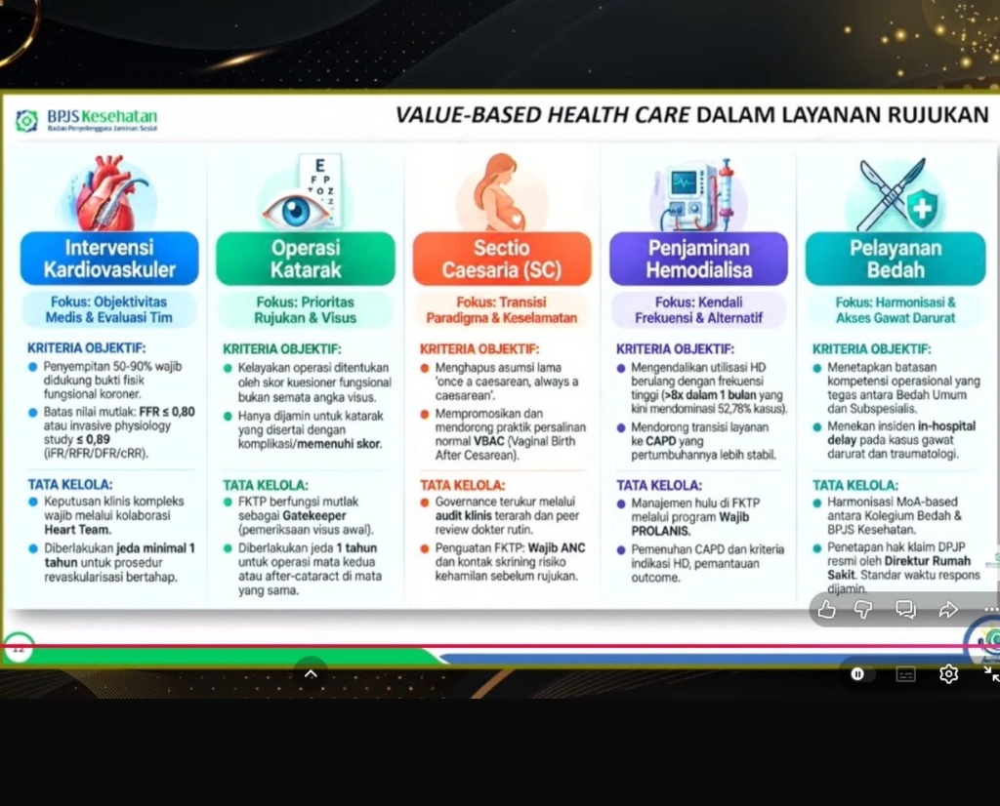

Kebijakan Baru BPJS Kesehatan 2026: Transformasi Mutu & Value-Based Healthcare
Dengan capaian Universal Health Coverage yang telah menembus 98,6% populasi penduduk Indonesia, BPJS Kesehatan resmi memulai transisi paradigma bersejarah: berpindah dari orientasi kuantitas layanan (volume-based) menuju manfaat kesehatan nyata bagi pasien (value-based care). Pelajari 5 pilar kebijakan strategis, standardisasi rawat inap KRIS, pengetatan anti-fraud, pendampingan BPJS SATU, serta hak layanan peserta teranyar 2026.
KRIS & Ruang Rawat
12 kriteria wajib, batas maksimal 4 tempat tidur, formula selisih biaya naik kelas VIP, dan skema koordinasi asuransi tambahan (KAPJ).
Simulator VBHC & KBK
Simulasikan pendapatan kapitasi faskes berdasarkan Angka Kontak, pengendalian Prolanis, batas rujukan non-spesialistik, dan protokol audit anti-fraud.
Dampak Dokter & Faskes
Beban kerja entri RME SATUSEHAT, risiko fluktuasi kapitasi KBK, otonomi klinis vs kendali biaya KMKB, mitigasi dispute klaim, dan kalkulator beban kerja nakes.
Analisis Kritis Kebijakan
Telaah kritis berbasis bukti (Lancet/WHO), trade-off fiskal vs katastropik, analisis cream-skimming, disparitas 3T, dan simulator kebijakan.
Transformasi Besar: Volume-Based Menuju Value-Based Healthcare
Mengapa capaian 98,6% UHC menuntut Indonesia membongkar model transaksional lama demi keberlanjutan fiskal dan kesembuhan nyata pasien.
Volume-Based Healthcare (Berbasis Kuantitas)
Insentif faskes terpaku pada akumulasi kuantitas: jumlah kunjungan poliklinik, tes laboratorium berulang, hari rawat inap, dan tingginya volume rujukan ke rumah sakit.
- Risiko moral hazard: pemeriksaan diagnostik berlebihan, lab defensif, dan pemulangan pasien sebelum sembuh sempurna.
- Poliklinik membludak: dokter menghabiskan 2-3 menit per pasien demi mengejar kuota jumlah kunjungan.
- Beban defisit Dana Jaminan Sosial (DJS) membengkak tanpa jaminan peningkatan angka harapan hidup atau kontrol penyakit kronis.
Value-Based Healthcare (Berbasis Nilai)
Remunerasi dan evaluasi faskes terikat langsung pada kesembuhan nyata pasien per rupiah anggaran, memprioritaskan penanganan tepat pada waktu yang tepat.
- Fokus hasil klinis: kendali HbA1c penderita diabetes, tensi stabil pada hipertensi, dan penurunan angka readmisi RS.
- Penguatan layanan primer: FKTP mendapat insentif KBK (90%–100% kapitasi) bila tuntas menangani 144 diagnosis kompetensi.
- Rekam medis terpadu i-Care JKN mencegah pemeriksaan lab duplikatif dan memitigasi interaksi obat berbahaya.
| Dimensi Evaluasi | Paradigma Volume-Based (Lama) | Paradigma Value-Based (2026) |
|---|---|---|
| Insentif Finansial Utama | Kuantitas klaim / Kapitasi statis per kepala tanpa evaluasi status kepatuhan obat pasien. | Pay-for-performance: Kapitasi dinamis (90%–100%) berdasarkan Angka Kontak, kontrol Prolanis, & rasio rujukan non-spesialistik. |
| Peran Faskes Primer (FKTP) | Loket rujukan administratif / memindahkan beban pasien primer langsung ke RS spesialis. | Gatekeeper tuntas (Integrasi Layanan Primer/ILP), penuntasan 144 diagnosis primer dengan kepatuhan terapi jangka panjang. |
| Akomodasi Rawat Inap RS | Stratifikasi kelas sosial 1, 2, dan 3 dengan kapasitas padat (hingga 6-10 bed/kamar di kelas 3 tanpa privasi). | KRIS (Kelas Rawat Inap Standar): 12 kriteria wajib baku, maks 4 bed/kamar, kamar mandi dalam standar disabilitas, non-diskriminasi. |
| Riwayat Rekam Medis Pasien | Data terisolasi (silo); wajib fotokopi berkas, cek lab berulang di setiap RS, risiko duplikasi obat. | i-Care JKN: Rekam medis longitudinal 12 bulan real-time yang dapat diakses dokter pemeriksa dengan consent biometrik pasien. |
| Pendampingan & Pengaduan | Kotak saran pasif / call center jarak jauh; sengketa ketiadaan ranjang RS lambat dimediasi. | Wajah Baru BPJS SATU: Petugas pendamping fisik di setiap RS mitra untuk mediasi cepat hak pasien (SLA < 1x24 jam). |
| Integritas & Pencegahan Fraud | Audit sampel manual pasca-klaim; rentan klaim fiktif (phantom billing) dan manipulasi diagnosis upcoding. | Satgas Gabungan KPK-Kemenkes-BPJS dengan verifikasi Face Recognition (FR), audit algoritma klaim, & integrasi RME SatuSehat. |
5 Pilar Kebijakan Transformasi Ekosistem JKN 2026
Diresmikan oleh Direktur Utama BPJS Kesehatan Mayjen TNI (Purn.) dr. Prihati Pujowaskito, Sp.JP(K) bersama Kementerian Kesehatan di bawah tema 'Gotong Royong untuk Jaminan Kesehatan yang Berkualitas, Inklusif dan Berkelanjutan'.
Transformasi Mutu Berbasis Nilai
Pergeseran dari kuantitas layanan ke pencapaian health outcomes. Fasilitas kesehatan tidak lagi dinilai semata dari banyaknya tindakan, tetapi dari efektivitas terapi klinis dan stabilitas pasien kronis.
Harmonisasi Ruang Rawat Inap KRIS
Penghapusan resmi kelas rawat inap 1, 2, dan 3 berlandaskan Perpres 59/2024. Seluruh RS wajib memenuhi 12 kriteria fisik baku: maksimal 4 tempat tidur, kamar mandi dalam ramah disabilitas, dan outlet oksigen terpusat.
Ekosistem Digital, i-Care & SATUSEHAT Rujukan
Penguatan integrasi antrean online Mobile JKN, biometrik Face Recognition (FR), rekam medis i-Care JKN 12 bulan, serta SATUSEHAT Rujukan berbasis kompetensi 24 kelompok pelayanan medis.
Disiplin Jadwal Kontrol & Iuran
Penerapan ketat jadwal kontrol rutin: pasien wajib hadir tepat pada tanggal surat kontrol; kedatangan lebih awal ditolak. Denda keterlambatan iuran rutin dihapus, namun denda rawat inap 45 hari tetap berlaku.
Sinergi KAPJ & Satgas Anti-Fraud
Sinergi Koordinasi Antar Penyelenggara Jaminan (KAPJ) dengan asuransi swasta tambahan (AKT) untuk naik kelas VIP. Penindakan tegas Satgas Gabungan KPK-Kemenkes-BPJS terhadap phantom billing dan upcoding.
Wajah Baru Petugas BPJS SATU
Petugas BPJS SATU (BPJS Siap Membantu) hadir langsung di setiap rumah sakit mitra, secara proaktif memediasi penolakan rawat inap, transparansi bed kosong, dan pengaduan pungli.
Kerangka 6 Intervensi Strategis: Eksekusi Nyata Menuju Value-Based Healthcare
Pergeseran paradigma dari kuantitas klaim (volume) menuju kesembuhan pasien (value) mustahil terwujud hanya melalui perubahan rumus tarif. BPJS Kesehatan bersama Kementerian Kesehatan mengintegrasikan 6 pilar intervensi operasional hulu-ke-hilir: pencegahan penyakit kronis hulu, penguatan kompetensi faskes primer, rujukan cerdas berbasis kompetensi, penegakan janji layanan, audit klinis anti-fraud, serta rekam medis digital terpadu.
1. Intervensi Promotif & Preventif Hulu
Skrining Riwayat Kesehatan semesta melalui Mobile JKN untuk mendeteksi dini faktor risiko penyakit katastropik sebelum jatuh ke tahap komplikasi. Deteksi dini kanker leher rahim (IVA/Papsmear), kanker payudara (SADANIS), kanker usus besar, talasemia, serta pengelolaan Prolanis aktif penderita DM tipe 2 dan hipertensi di layanan primer.
2. Intervensi Faskes Primer & Integrasi Layanan Primer (ILP)
Penguatan kapasitas Puskesmas dan klinik pratama untuk menuntaskan 144 diagnosis kompetensi primer tanpa perlu melempar rujukan. Penataan faskes ke dalam 4 klaster siklus hidup (Integrasi Layanan Primer/ILP) serta penegakan Kapitasi Berbasis Kinerja (KBK: Angka Kontak, Rasio Prolanis Terkendali, RRNS < 2%).
3. Intervensi Rujukan Cerdas Berbasis Kompetensi
Mendekonstruksi rujukan hierarki kaku (Tipe D ke C, lalu B, baru A) yang memperpanjang penanganan medis. Rujukan kini diarahkan langsung via platform SATUSEHAT Rujukan & SISRUTE ke rumah sakit terdekat yang memiliki sarana dan dokter spesialis di 24 kelompok pelayanan klinis, terintegrasi ketersediaan ranjang SIRANAP real-time.
4. Intervensi Kepatuhan Janji Layanan & BPJS SATU
Penegakan disiplin 6 Janji Layanan JKN di 27.000+ faskes mitra: bebas fotokopi berkas, nol biaya tambahan obat/tindakan, tanpa pembatasan kuota diskriminatif, kepastian antrean online, obat Fornas terjamin tanpa resep luar, dan rujukan kompetensi. Petugas siaga BPJS SATU di setiap RS menyelesaikan sengketa admisi dalam < 24 jam.
5. Intervensi Tata Kelola Klaim, KMKB & Anti-Fraud
Audit utilisasi independen oleh Komite Kendali Mutu Kendali Biaya (KMKB) dan Komite Pertimbangan Klinis (KPK) untuk menjaga independensi medis sesuai Clinical Pathways. Satgas Gabungan Anti-Fraud (KPK, Kemenkes, BPJS) memanfaatkan machine learning untuk mendeteksi phantom billing, upcoding diagnosis, split billing obat, dan biometrik Face Recognition (FR).
6. Intervensi Ekosistem Digital (i-Care & SATUSEHAT)
Inovasi i-Care JKN menyediakan riwayat rekam medis longitudinal 12 bulan lintas faskes yang dapat diakses dokter pemeriksa dengan izin (consent) biometrik pasien. Memutus silo data, mengakhiri tes darah/radiologi berulang yang menyiksa pasien, serta integrasi RME terpadu via SATUSEHAT dan antrean online Mobile JKN.
Value-Based Health Care dalam Layanan Rujukan: 5 Prosedur Klinis Prioritas
Dipaparkan langsung dalam Pertemuan Nasional Fasilitas Kesehatan (Pernas Faskes 2026) oleh BPJS Kesehatan, dokumen resmi ini mentransformasi tata kelola klinis dari kuantitas tindakan (volume) ke kesembuhan terukur (value). Memuat batas kuantitatif mutlak, kewajiban Heart Team, skor fungsional katarak, akselerasi persalinan normal VBAC, pembatasan HD frekuensi tinggi >8x/bulan, hingga jaminan waktu tanggap bedah darurat.

Mengapa Slide Ini Menjadi Titik Balik Praktik Klinis Nasional
Sebelum arahan ini terbit, pengendalian rujukan rumah sakit didominasi verifikasi administratif pasca-tindakan. Dokumen resmi ini menetapkan batas fisiologis kuantitatif mutlak dan jeda waktu wajib yang langsung dikunci ke dalam sistem validasi klaim INA-CBGs BPJS Kesehatan.
1. Intervensi Kardiovaskuler (PCI / Pasang Ring)
- Penyempitan 50–90% wajib didukung bukti fisik fungsional koroner.
- Batas nilai mutlak: FFR ≤ 0,80 atau invasive physiology study ≤ 0,89 (iFR/RFR/DFR/cRR).
Keputusan klinis kompleks wajib melalui kolaborasi Heart Team (Sp.JP & Sp.BTKV). Diberlakukan jeda minimal 1 tahun untuk prosedur revaskularisasi bertahap (staged PCI) demi mencegah split-billing klaim.
2. Operasi Katarak & Fakoemulsifikasi
- Kelayakan operasi ditentukan oleh skor kuesioner fungsional bukan semata angka visus.
- Hanya dijamin untuk katarak yang disertai dengan komplikasi/memenuhi skor fungsional.
FKTP berfungsi mutlak sebagai Gatekeeper (pemeriksaan visus awal). Diberlakukan jeda 1 tahun untuk operasi mata kedua atau after-cataract di mata yang sama.
3. Sectio Caesaria (SC) & Transisi VBAC
- Menghapus asumsi lama 'once a caesarean, always a caesarean'.
- Mempromosikan dan mendorong praktik persalinan normal VBAC (Vaginal Birth After Cesarean).
Governance terukur melalui audit klinis terarah dan peer review dokter rutin. Penguatan FKTP: Wajib ANC dan kontak skrining risiko kehamilan sebelum rujukan.
4. Penjaminan Hemodialisa & Transisi CAPD
- Mengendalikan utilisasi HD berulang dengan frekuensi tinggi (>8x dalam 1 bulan yang kini mendominasi 52,78% kasus).
- Mendorong transisi layanan ke CAPD yang pertumbuhannya lebih stabil.
Manajemen hulu di FKTP melalui program Wajib PROLANIS. Pemenuhan CAPD dan kriteria indikasi HD, serta pemantauan outcome kesembuhan.
5. Pelayanan Bedah & Akses Gawat Darurat
- Menetapkan batasan kompetensi operasional yang tegas antara Bedah Umum dan Subspesialis.
- Menekan insiden in-hospital delay pada kasus gawat darurat dan traumatologi.
Harmonisasi MoA-based antara Kolegium Bedah & BPJS Kesehatan, penetapan hak klaim DPJP resmi oleh Direktur RS, dan penegakan standar waktu respons.
Eksplorasi Simulator & Kajian Kritis
Ketahui rumus pembiayaan, uji kelayakan diagnosis di simulator klinis, dan pelajari bedah kebijakan kritis tingkat doktoral terkait dilema etik, risiko hukum malpraktik VBAC, serta realitas rantai pasok dialisat di sub-halaman kompendium.
Janji Layanan JKN: 6 Komitmen Wajib Faskes Mitra
Setiap fasilitas kesehatan mitra wajib memajang dan memenuhi 6 janji layanan ini secara konsisten. Pelanggaran berakibat sanksi tegas hingga pemutusan kerja sama.
Cukup Tunjukkan KTP / NIK Digital
Faskes dilarang meminta fotokopi berkas fisik KTP, KK, atau kartu BPJS. Tampilan KIS Digital di aplikasi Mobile JKN sah digunakan.
Bebas Iur Biaya Tambahan Ilegal
Dilarang keras memungut biaya tambahan di luar ketentuan untuk tindakan medis, perban, jarum, atau obat yang telah ditanggung paket JKN.
Tanpa Diskriminasi Kuota Pasien
Faskes dilarang membatasi kuota harian pasien BPJS sementara membuka kuota lebar-lebar bagi pasien umum yang membayar mandiri.
Kepastian Antrean Online Mobile JKN
Sistem pendaftaran RS dan klinik wajib terhubung real-time dengan Mobile JKN agar peserta mendapatkan estimasi jam periksa yang pasti.
Jaminan Ketersediaan Obat
Faskes wajib menyediakan obat sesuai Formularium Nasional dan dilarang meminta pasien membeli obat sendiri di apotek luar dengan biaya pribadi.
Rujukan Berbasis Kompetensi Medis
Rujukan sekunder diarahkan sesuai ketersediaan sarana alat medis dan kompetensi dokter subspesialis, bukan preferensi subjektif.
Seva Paramahita Award 2026: Teladan Transformasi Mutu
Penganugerahan kepada 51 faskes dan tenaga kesehatan teladan atas komitmen kepatuhan janji layanan, nol iur biaya, dan adopsi digital prima.
Puskesmas Umbulsari
Kabupaten Jember, Jawa Timur
Pengelolaan Prolanis DM/HT terbaik, pemanfaatan antrean online Mobile JKN 100%, dan inovasi jemput bola pasien lansia berisiko tinggi.
RSUD Dr. Soetomo
Kota Surabaya, Jawa Timur
Optimalisasi rujukan tersier, integrasi rekam medis elektronik prima dengan i-Care JKN, serta penyelesaian sengketa ranjang lewat BPJS SATU.
Klinik Pratama Ganesha Bali
Kabupaten Buleleng, Bali
Capaian Angka Kontak tertinggi, nihil pungutan liar obat, serta skrining terpadu faktor risiko kardiovaskular komunitas.
RSUD Syarifah Ambami Rato Ebu
Kabupaten Bangkalan, Madura
Kesiapan ruang rawat standar KRIS teladan, anjungan informasi mandiri peserta, dan indeks kepuasan rawat inap 98%.
dr. Efri Yeni
Kabupaten Padang Pariaman, Sumbar
Kontinuitas pelayanan dokter keluarga teladan, pemanfaatan telekonsultasi aktif, serta rasio rujukan non-spesialistik terkendali (<1%).
drg. Fitri Eka Rahmafuri
Kabupaten Jember, Jawa Timur
Pendidikan kesehatan gigi komprehensif, kepatuhan skrining karies aktif, dan pelayanan bebas diskriminasi.
Parameter Penilaian Seva Paramahita Award:
Pernas Faskes BPJS Kesehatan 2026: Rekaman Siaran Langsung
Saksikan siaran resmi penuh Pertemuan Nasional Fasilitas Kesehatan 2026 dari kanal YouTube resmi BPJS Kesehatan: pidato kunci direksi, anugerah Seva Paramahita, dan arah kebijakan baru.
Dm1dNptd1J8
Buka langsung di YouTube
Capaian Cakupan Semesta 98,6% Penduduk
Laporan resmi perlindungan 284,3 juta jiwa peserta dan kesiapan 27.000+ faskes di 514 kabupaten/kota.
Transformasi Mutu Value-Based Healthcare & Sinergi KAPJ
Dirut BPJS Kesehatan Mayjen TNI (Purn.) dr. Prihati Pujowaskito, Sp.JP(K) menegaskan transformasi mutu dari kuantitas volume menjadi hasil kesehatan nyata pasien, penguatan pendampingan BPJS SATU, serta integrasi KAPJ dengan asuransi swasta.
Standar Ruang Rawat KRIS & Kuota RS
Harmonisasi 12 kriteria fisik ruangan, maksimal 4 tempat tidur, serta kuota bed RSUD 60% dan swasta 40%.
Penganugerahan Seva Paramahita Award 2026
Apresiasi kepada 51 faskes teladan dari kategori Puskesmas, klinik, dokter praktik, hingga rumah sakit se-Indonesia.
Linimasa: Transisi Menuju JKN Value-Based (2024–2027)
Menelusuri tonggak legislasi dan operasional yang merevolusi jaminan kesehatan nasional di seluruh pelosok negeri.
Perpres 59/2024 Disahkan
Amanat resmi penghapusan kelas 1, 2, 3 rawat inap dan penetapan 12 kriteria KRIS dengan batas penyesuaian faskes.
Penegasan Disiplin Layanan & Denda
Penerapan ketat jadwal surat kontrol rawat jalan dan penghapusan denda keterlambatan iuran rutin bulanan.
Pernas Faskes & Peluncuran VBHC
Deklarasi pergeseran ke Value-Based Care, peluncuran Wajah Baru BPJS SATU, serta penganugerahan Seva Paramahita Award 2026.
Tarif Tunggal & Audit Terpadu SatuSehat
Audit kepatuhan menyeluruh 100% bed KRIS, evaluasi struktur iuran tunggal, dan audit otomatis terintegrasi SatuSehat.
Perubahan Ketiga atas Perpres 82/2018 tentang Jaminan Kesehatan (Dasar Hukum KRIS).
Siaran Resmi Transformasi Value-Based Healthcare & Seva Paramahita Award (15 Sept 2026).
Standar Tarif Pelayanan Kesehatan dalam Penyelenggaraan Program Jaminan Kesehatan.
UU Kesehatan Republik Indonesia: Penguatan Tata Kelola & Sanksi Pencegahan Fraud Medis.
Standar Operasional Prosedur Pendampingan & Resolusi Pengaduan Pasien di Rumah Sakit.
What is Value in Health Care? The New England Journal of Medicine (Dasar Teoretis VBHC).